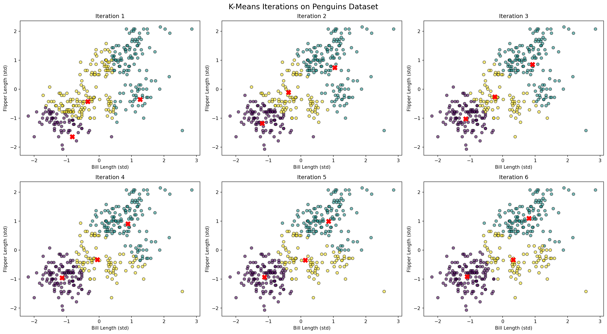
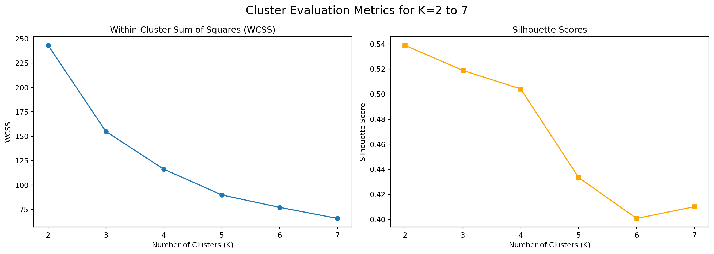
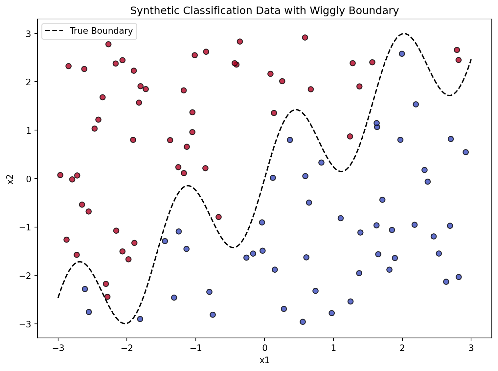

1a. K-Means: Manual Implementation and Visualization
We implemented the K-Means clustering algorithm from scratch using NumPy. The algorithm iteratively assigns data points to the nearest centroid and updates the centroids based on the mean of each cluster.
To visualize the learning process, we plot the state of the algorithm at each iteration. In the figure below, each subplot shows the cluster assignment and centroid positions after one round of updates. We use standardized bill_length_mm and flipper_length_mm as the two input features.
As seen in the visual progression, the algorithm converges in around 6 iterations. Clusters become more defined and centroids stabilize, reflecting the classic behavior of K-Means on well-separated data.
import pandas as pdimport numpy as npimport matplotlib.pyplot as pltfrom sklearn.preprocessing import StandardScaler# Reload penguins datasetpenguins_df = pd.read_csv("palmer_penguins.csv")# Extract only the two specified features from penguins datasetpenguins_simple = penguins_df[['bill_length_mm', 'flipper_length_mm']].dropna()# Standardize the features for better K-means performancescaler = StandardScaler()X_kmeans = scaler.fit_transform(penguins_simple)# Prepare DataFrame for visualizationpenguins_kmeans_df = pd.DataFrame(X_kmeans, columns=['bill_length_std', 'flipper_length_std'])# Define K-Means from scratch with visualization for each stepdef kmeans_with_tracking(X, k=3, max_iters=10): np.random.seed(42) n = X.shape[0] centroids = X[np.random.choice(n, k, replace=False)] history = []for i inrange(max_iters): distances = np.linalg.norm(X[:, np.newaxis] - centroids, axis=2) labels = np.argmin(distances, axis=1) new_centroids = np.array([X[labels == j].mean(axis=0) for j inrange(k)]) history.append((centroids.copy(), labels.copy()))if np.allclose(centroids, new_centroids):break centroids = new_centroids final_labels = labelsreturn centroids, final_labels, history# Run the algorithmcentroids, final_labels, history = kmeans_with_tracking(X_kmeans, k=3, max_iters=6)# Visualize each iterationfig, axes = plt.subplots(2, 3, figsize=(18, 10))axes = axes.flatten()for i, (centers, labels) inenumerate(history): ax = axes[i] ax.scatter(X_kmeans[:, 0], X_kmeans[:, 1], c=labels, cmap='viridis', alpha=0.6, edgecolor='k') ax.scatter(centers[:, 0], centers[:, 1], c='red', marker='X', s=100) ax.set_title(f"Iteration {i +1}") ax.set_xlabel("Bill Length (std)") ax.set_ylabel("Flipper Length (std)")plt.suptitle("K-Means Iterations on Penguins Dataset", fontsize=16)plt.tight_layout()plt.show()

Comparing to Built-in KMeans
To validate our implementation, we compared our results to Python’s built-in sklearn.cluster.KMeans function. As shown below, the two clustering solutions are nearly identical in both cluster boundaries and centroid placement.
This confirms that our from-scratch implementation is functioning correctly.
To determine the optimal number of clusters, we evaluated two metrics:
Within-Cluster Sum of Squares (WCSS): Measures how compact the clusters are. We observe an “elbow” at K=3, suggesting a good balance of simplicity and tight grouping.
Silhouette Score: Captures how distinct the clusters are from one another. While K=2 yields the highest score, K=3 offers nearly as strong separation with added nuance.
Taken together, these metrics suggest that K=3 is the most appropriate number of clusters for our dataset.
from sklearn.metrics import silhouette_scorefrom sklearn.metrics import pairwise_distances_argmin_min# Try different values of K and compute metricsk_values =range(2, 8)wcss = [] # Within-cluster sum of squaressilhouette_scores = []for k in k_values: kmeans = KMeans(n_clusters=k, random_state=42, n_init=10) labels = kmeans.fit_predict(X_kmeans) centroids = kmeans.cluster_centers_# WCSS: sum of squared distances to closest centroid _, distances = pairwise_distances_argmin_min(X_kmeans, centroids) wcss.append(np.sum(distances **2))# Silhouette Score sil = silhouette_score(X_kmeans, labels) silhouette_scores.append(sil)# Plot resultsfig, ax = plt.subplots(1, 2, figsize=(14, 5))# Plot WCSSax[0].plot(k_values, wcss, marker='o')ax[0].set_title('Within-Cluster Sum of Squares (WCSS)')ax[0].set_xlabel('Number of Clusters (K)')ax[0].set_ylabel('WCSS')# Plot Silhouette Scoresax[1].plot(k_values, silhouette_scores, marker='s', color='orange')ax[1].set_title('Silhouette Scores')ax[1].set_xlabel('Number of Clusters (K)')ax[1].set_ylabel('Silhouette Score')plt.suptitle("Cluster Evaluation Metrics for K=2 to 7", fontsize=16)plt.tight_layout()plt.show()

2a. K Nearest Neighbors
todo: use the following code (or the python equivalent) to generate a synthetic dataset for the k-nearest neighbors algorithm. The code generates a dataset with two features, x1 and x2, and a binary outcome variable y that is determined by whether x2 is above or below a wiggly boundary defined by a sin function.
import numpy as npimport pandas as pdimport matplotlib.pyplot as plt# Step 1: Generate synthetic dataset following the R code logicnp.random.seed(42)n =100# Generate random uniform valuesx1 = np.random.uniform(-3, 3, n)x2 = np.random.uniform(-3, 3, n)# Define the wiggly boundaryboundary = np.sin(4* x1) + x1# Assign binary class based on whether x2 > boundaryy = (x2 > boundary).astype(int)# Create DataFramesynthetic_df = pd.DataFrame({'x1': x1, 'x2': x2, 'y': y})synthetic_df.head()
x1
x2
y
0
-0.752759
-2.811425
0
1
2.704286
0.818462
0
2
1.391964
-1.113864
0
3
0.591951
0.051424
0
4
-2.063888
2.445399
1
Visualizing the Synthetic Classification Dataset
We generate a synthetic dataset with two features, x1 and x2, and a binary outcome variable y. The decision boundary is defined by a non-linear function: y = 1 if x2 > sin(4·x1) + x1 else 0
In the plot below, the data points are colored by their class label. The black dashed curve represents the true boundary that separates the classes.
This dataset is ideal for evaluating classification algorithms like KNN, which are capable of capturing non-linear decision surfaces.
# Re-generate the synthetic datanp.random.seed(42)n =100x1 = np.random.uniform(-3, 3, n)x2 = np.random.uniform(-3, 3, n)boundary = np.sin(4* x1) + x1y = (x2 > boundary).astype(int)# Create DataFramesynthetic_df = pd.DataFrame({'x1': x1, 'x2': x2, 'y': y})# Plot the data and boundaryplt.figure(figsize=(8, 6))plt.scatter(synthetic_df['x1'], synthetic_df['x2'], c=synthetic_df['y'], cmap='coolwarm', edgecolor='k', alpha=0.8)# Plot the true decision boundaryx_vals = np.linspace(-3, 3, 300)boundary_vals = np.sin(4* x_vals) + x_valsplt.plot(x_vals, boundary_vals, color='black', linestyle='--', label='True Boundary')plt.xlabel('x1')plt.ylabel('x2')plt.title('Synthetic Classification Data with Wiggly Boundary')plt.legend()plt.tight_layout()plt.show()

Generate test dataset using different seed
# Re-import necessary libraries after kernel resetimport numpy as npimport pandas as pd# Regenerate training datanp.random.seed(42)n =100x1 = np.random.uniform(-3, 3, n)x2 = np.random.uniform(-3, 3, n)boundary = np.sin(4* x1) + x1y = (x2 > boundary).astype(int)train_df = pd.DataFrame({'x1': x1, 'x2': x2, 'y': y})# Generate test dataset using different seednp.random.seed(123)n_test =100x1_test = np.random.uniform(-3, 3, n_test)x2_test = np.random.uniform(-3, 3, n_test)boundary_test = np.sin(4* x1_test) + x1_testy_test = (x2_test > boundary_test).astype(int)test_df = pd.DataFrame({'x1': x1_test, 'x2': x2_test, 'y': y_test})# Show first few rows of test datatest_df.head()
x1
x2
y
0
1.178815
0.078769
0
1
-1.283164
0.999747
1
2
-1.638891
-2.364549
0
3
0.307889
-2.214630
0
4
1.316814
-1.068116
0
implement KNN by hand and compare with the KNeighborsClassifier
We implemented the K-Nearest Neighbors algorithm manually by calculating Euclidean distances, selecting the k closest points, and using majority vote to assign class labels.
We then compared the accuracy of our custom KNN with sklearn.neighbors.KNeighborsClassifier using the test dataset. For k=5, both models achieved 92% accuracy, confirming that our implementation is correct.
This demonstrates the simplicity and power of distance-based classification methods for non-linear problems.
To select the best number of neighbors, we evaluated the model’s classification accuracy on the test dataset for values of ( K ) ranging from 1 to 30. The plot below shows the test accuracy for each ( K ).
We observe that K=1, 2, and 7 yield the highest accuracy of 95%, suggesting that small values of ( K ) are better suited for capturing the non-linear boundary in this dataset. As ( K ) increases, accuracy generally declines, consistent with the bias-variance trade-off.
# Evaluate accuracy for k = 1 to 30 using manual KNNk_range =range(1, 31)accuracies = []for k in k_range: preds = knn_predict(X_train, y_train, X_test, k=k) acc = accuracy_score(y_test, preds) accuracies.append(acc *100) # convert to percentage# Plot accuracy vs. kplt.figure(figsize=(10, 6))plt.plot(k_range, accuracies, marker='o')plt.title("Test Accuracy vs. K (Manual KNN)")plt.xlabel("Number of Neighbors (K)")plt.ylabel("Accuracy (%)")plt.grid(True)plt.xticks(range(1, 31, 2))plt.tight_layout()plt.show()